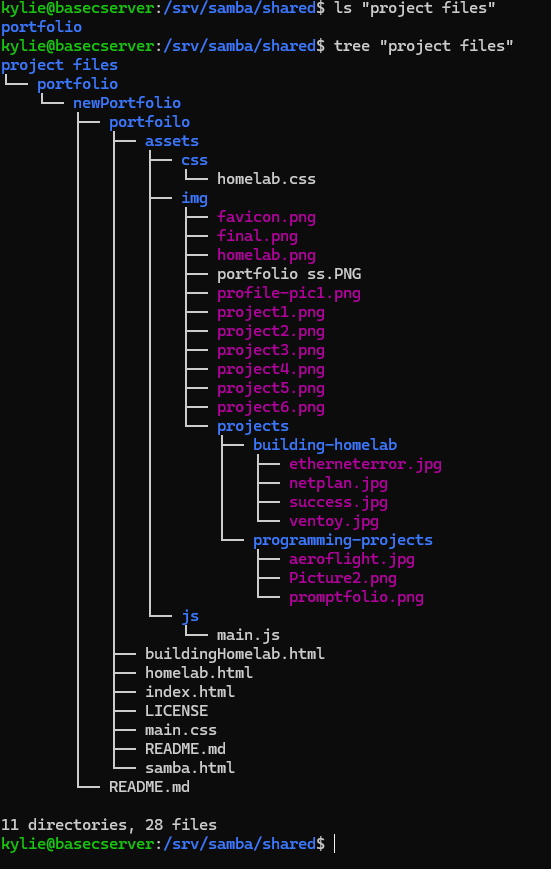

Setting up rsync for Windows and Linux
rsync download
rsync is already pre-installed with ubuntu server.
Setting up rsync for windows
cwrsync provides a way to use rsync without WSL-
Basic rsync syntax
rsync [OPTIONS] SOURCE DESTINATION- SOURCE: file or directory you’re copying from.
- DESTINATION: where you’re copying to.
- Can be local paths or remote paths like
user@host:/path/.
-
Local copy (same machine)
rsync -avh /src/folder/ /dst/folder/-a: archive mode (preserves permissions, times, owners, etc.).-v: verbose output.-h: human-readable numbers.
-
Remote copy over SSH (push to server)
rsync -avz /local/folder/ user@server:/remote/folder/-z: compress data during transfer.
-
Remote copy over SSH (pull from server)
rsync -avz user@server:/remote/folder/ /local/folder/ -
Using a custom SSH port
rsync -avz -e "ssh -p 2222" /local/folder/ user@server:/remote/folder/ -
Trailing slash behaviour
rsync -av /src/folder /dst/→ creates/dst/folder/.rsync -av /src/folder/ /dst/→ copies contents only.
-
Dry run (no changes)
rsync -av --dry-run /src/ /dst/--dry-runor-n: simulate without copying/deleting.
-
Show progress
rsync -av --progress /src/ /dst/
or
rsync -avP /src/ /dst/ -
Mirror a directory (delete extra files)
rsync -av --delete /src/ /dst/- Warning: deletes files in destination that no longer exist in source.
-
Include/Exclude patterns
- Exclude patterns:
rsync -av --exclude="*.tmp" --exclude="cache/" /src/ /dst/ - Include only certain files:
rsync -av --include="*.cfg" --exclude="*" /src/ /dst/ - Use exclude file:
rsync -av --exclude-from="exclude.txt" /src/ /dst/
- Exclude patterns:
-
Preserving permissions & ownership
rsync -av /src/ /dst/-apreserves: perms, times, group, owner, devices, symlinks.- Run with
sudoif you need to preserve owners/groups.
-
Limit bandwidth
rsync -av --bwlimit=5000 /src/ user@server:/dst/--bwlimit: limit speed in KB/s.
-
Use checksums instead of mod-times
rsync -avc /src/ /dst/-c: checksum comparison (slower but accurate).
-
Sync via rsync daemon
rsync -av rsync://server/module/path /local/dst/- Requires
rsyncdrunning and configured on remote.
- Requires
-
Backup pattern (date-stamped folder)
rsync -av --delete /data/ /backups/$(date +%Y-%m-%d)/
Setting up cwRsync
rsync
-avz '/cygdrive/c/Users\losar\project files'
kyle@192.168.10.18/srv/samba/shared/project files
 Displayed files in folder